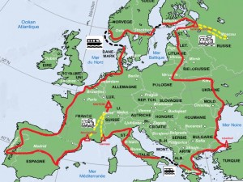
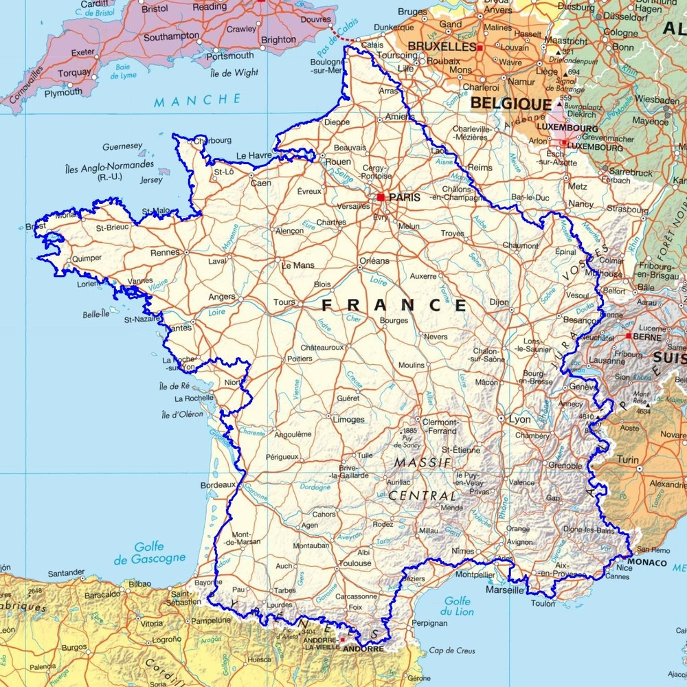

For some years now, I have a project in my life to realize a tour of Europe on foot, alone or in duo. This will allow me to discover other cultures, push my limits, meet others and make many other discoveries.

Construction Stage:
Planning:
The planning of such an event is very complex. There are a lot of parameters and unforeseen events to take into account. I plan to spend about 5-10 years in active life to save enough money to live independently during my trip and to be able to deal with any eventuality such as health crisis, geopolitical conflict and any other disturbance.
Duration:
The duration is relatively variable according to the countries crossed, if the European long distance trails are followed, etc. It is necessary to count an itinerary of 20 000 to 30 000Km for 4 to 5 years. Of course it is better to foresee some time for beating.
Training:
I am aware that this project is clearly not trivial and that I need training. For the moment I am trying to find my limits. At the moment I have been able to define my limits on one day hikes. In the next few years I will be doing longer and longer hikes, such as the GR5, the GR20 until I can do the Tour de France with an estimated time of 1 year. After these different experiences I will be able to plan my project more precisely.

Share:
In the life of a Scout, sharing is an important part of every project. This sharing is done throughout the project. It starts from the preparation with people who have already realized this project. It continues and takes fully the sense of sharing with the meetings that I will make. Then it can end when I return to my geographical point of departure.
Communication:
For the communication I intend to keep a link with my relatives. This will also allow me to share my adventure and set up projects with other people such as the scouts. To communicate during my meetings I count on my level of English, and with a bit of luck I will meet people who also speak Esperanto.